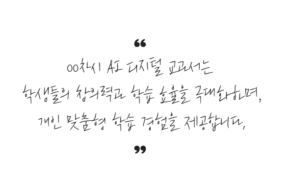
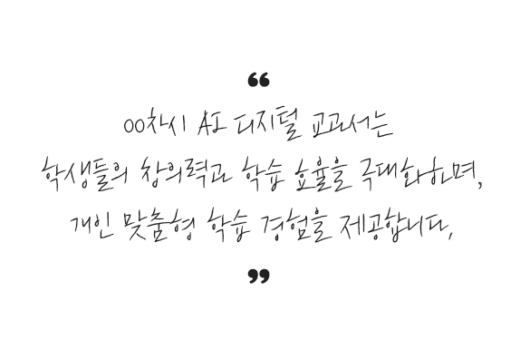

정보 AI 디지털 교과서를
한눈에 확인해 보세요!
재미있고 알찬 정보 교과 콘텐츠, 5개 단원 총 17차시로 구성되었습니다.
컴퓨팅 시스템
실제 화면과 유사한 시뮬레이션 환경에서 다양한 정보 기기의 사용법을 체험하면서 익힙니다.
- ◆정보 기기 사용하기
- - 1차시 : 정보기기 알아보기
- ◆운영체제 기능 탐색하기
- - 2차시 : 운영체제 알아보기
- - 3차시 : 운영체제 활용하기
- - 4차시 : 응용 프로그램으로 정보 검색하기
- ◆응용프로그램 활용하기
- - 5차시 : 정보 검색으로 문제 해결하기
데이터
이야기를 통한 문제 해결 과정에서 여러 가지 데이터를 수집 · 분석하며 데이터를 활용하는 역량을 키웁니다.
- ◆데이터 체험하기
- - 6차시 : 데이터의 유형 알아보기
- - 7차시 : 여러 가지 데이터로 학교 소개하기
- ◆데이터 수집 분석하기
- - 8차시 : 데이터 수집하기
- - 9차시 : 데이터 분석하기
알고리즘과 프로그래밍
블록 코딩을 통해 주어진 미션을 해결하며 프로그래밍의 원리를 쉽고 재미있게 배웁니다.
- ◆프로그래밍 체험하기
- - 10차시 : 프로그래밍 시작하기
- - 11차시 : 복잡한 프로그램 만들기
 인공지능
인공지능
AR 카메라, 생성형 AI 등 최신 인공지능 기술을 직접 경험하며 인공지능의 개념과 활용 사례를 배웁니다.
- ◆인공지능 체험하기
- - 12차시 : 인공지능 알아보기
- - 13차시 : 인공지능 기술 체험하기
- ◆인공지능 활용하기
- - 14차시 : 다양한 인공지능 서비스 활용하기
- - 15차시 : 생성형 인공지능으로 문제 해결하기
디지털 문화
온라인 수업, SNS 활동 등 디지털을 사용하는 여러 가지 상황에서의 인터랙티브 활동으로 디지털 예절과 개인 정보 보호 방법을 익힙니다.
- ◆디지털 문화 실천하기
- - 16차시 : 디지털 사회에서 지켜야 할 예절 알아보기
- ◆개인정보 보호하기
- - 17차시 : 개인 정보의 중요성 알아보기
 
